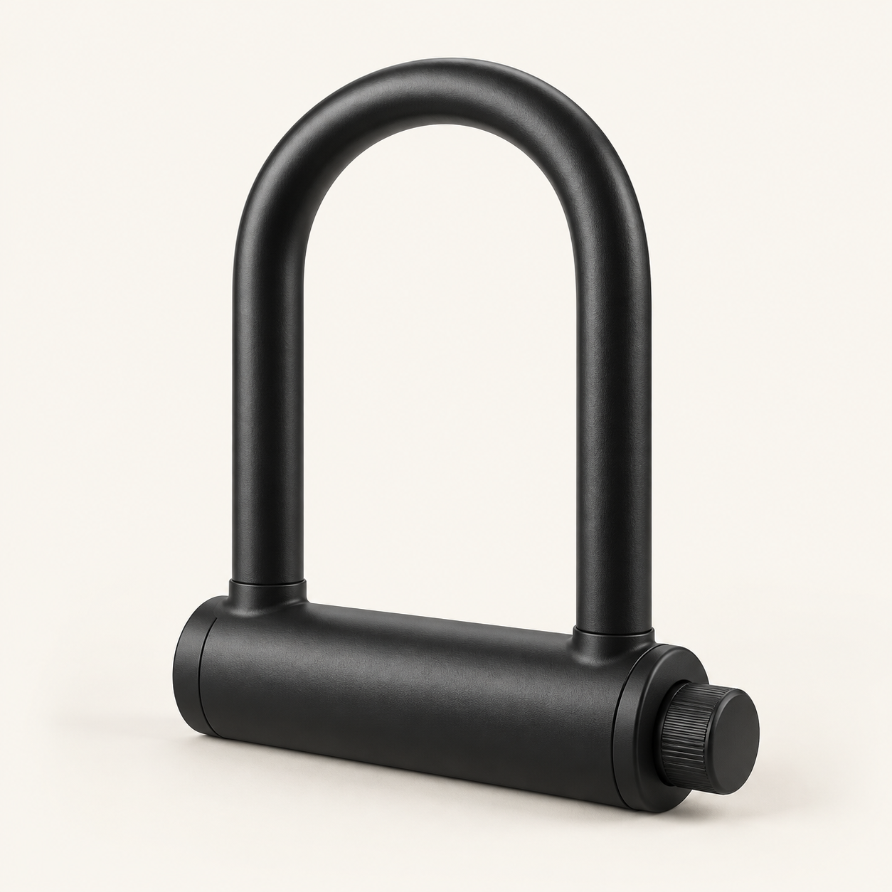

Arrive. Turn the knob.
Your iPhone detects your return to your bike and can release the lock over Bluetooth. That means less reaching for an app every time you want to ride.
How it worksPlanned: CHF 9.95 once · not yet available on the App Store
For compatible BLACK X RockSolid U-locks and an authorized BLACK X account. Requires an iPhone with iOS 17 or later. Lock sold separately.

How it works
Set up once
Sign in with your existing account, choose your bike and complete one manual release. Then enable Auto-Unlock.
Leave and return
After at least 30 seconds of detected departure, a briefly stable nearby signal triggers one attempt. You choose the signal threshold.
Turn at the beep
Turn the knob within six seconds. After setup, release uses the saved credential without an internet connection.
One tap when you need it.
Home and Lock Screen widgets plus Shortcuts start a manual attempt in the app. The last lock battery reading and optional alerts help you respond in time.
Try it without a lock
Tap “Try demo” in the app. Explore manual release, departure and return, threshold and battery alerts with clearly labelled sample data.
Bluetooth signal and iOS affect detection. Auto-Unlock can be delayed. Do not force-quit the app; open it once after restarting your iPhone. The app cannot detect whether the shackle is physically open.
Contact
Email us with Bike Auto Unlock in the subject.